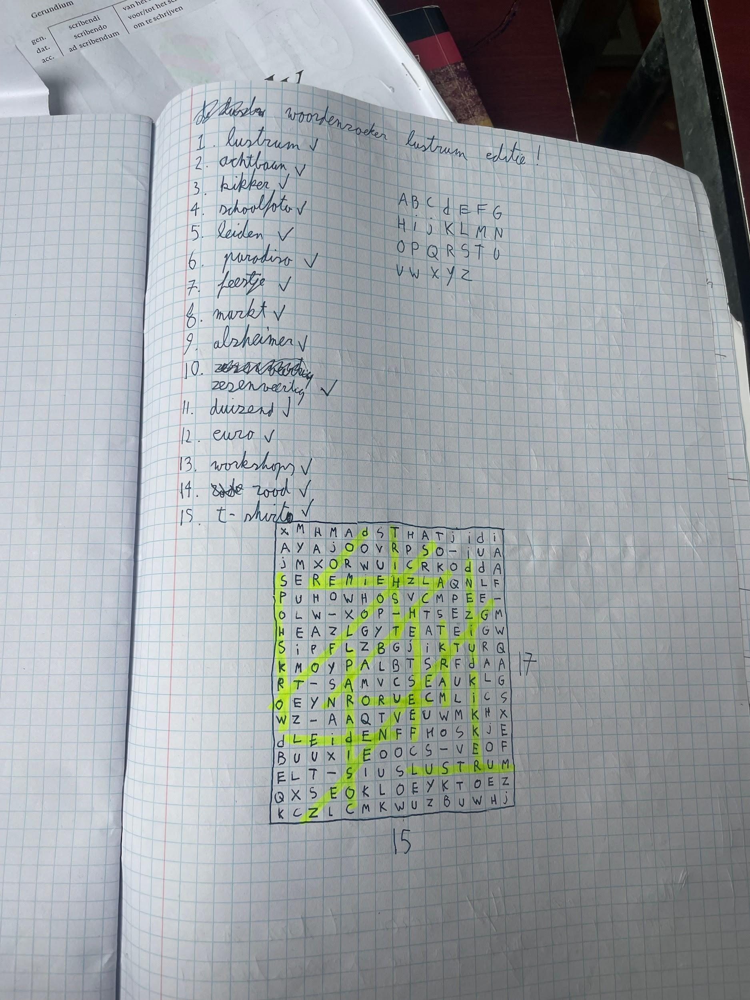
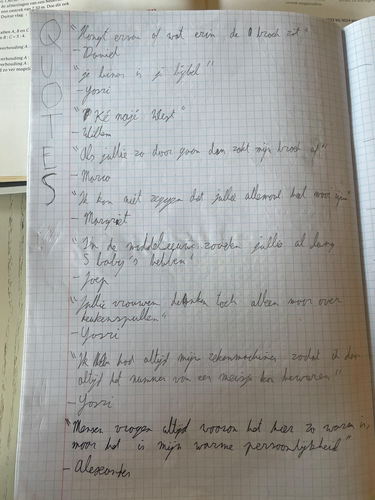
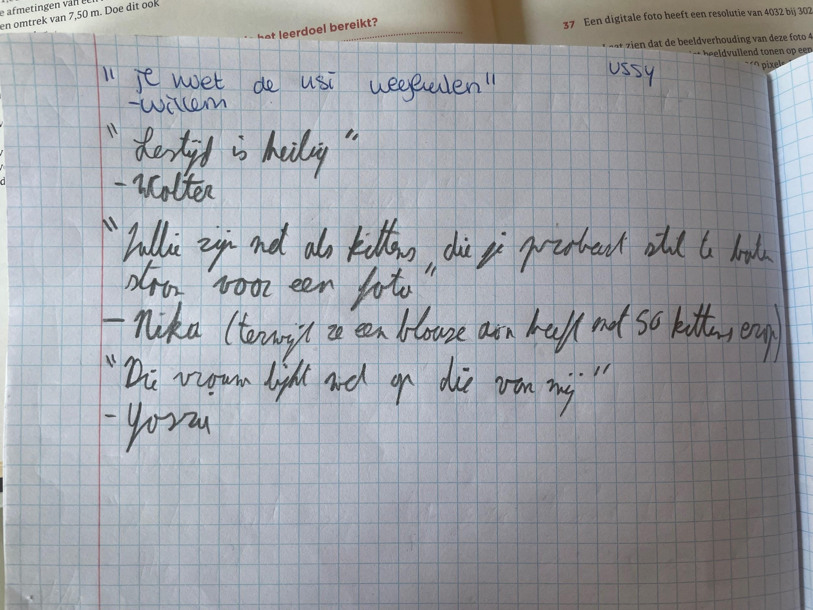
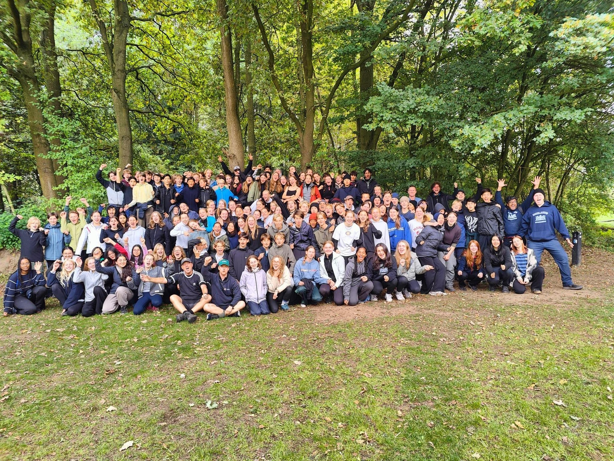
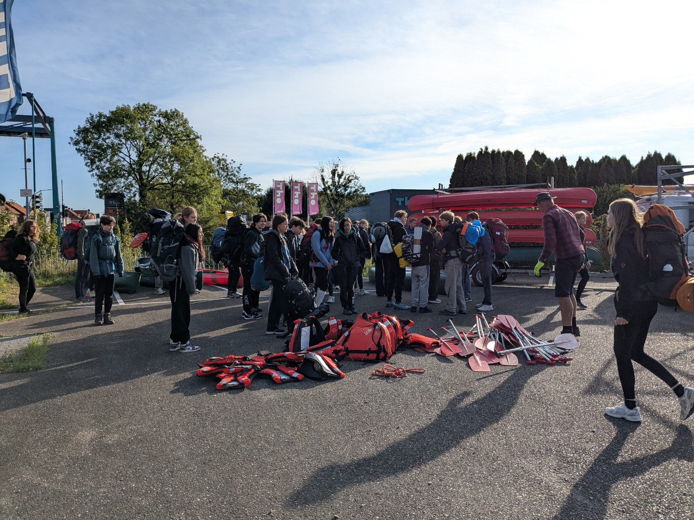
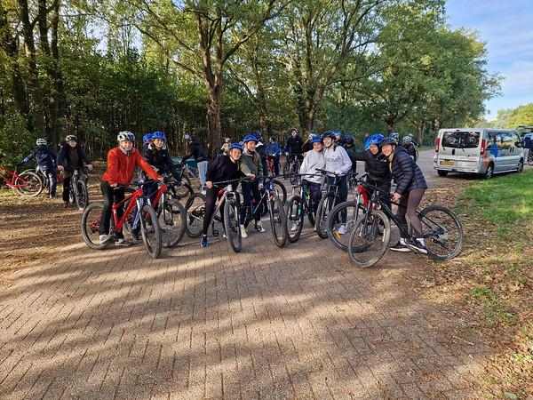
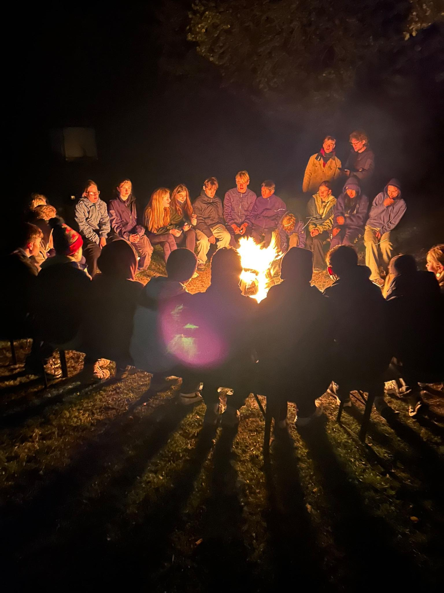

Artikel 1
📰 Eerste Editie van de Krant

Welkom bij de allereerste editie van het Barlaeus Journaal! In deze uitgave vind je alles over het lustrumfeest, survival kamp, de reis naar Ieper en nog veel meer spannende verhalen van dit schooljaar.
🎨 Design bekijken: Canva Design Link
🎉 LUSTRUM: Het Ongelooflijke Succes van 1A
Door Mette en Nina | Deadline: week van 20-26 september

Hoe kwam 1A aan zo belachelijk veel geld? Dat was de vraag die veel Barlaeanen zich stelden toen bekend werd gemaakt dat 1A (en 2D, overigens) naar het Tikibad ging. Nou, wij hebben een antwoord op die vraag.
💰 Het Winnende Bedrag
Twee weken een villa huren in Ibiza, vijf nieuwe iPhones 17, 1500 panini's in de kantine — dat kan je allemaal kopen voor €5.500. Ook is dit het bedrag dat klas 1A heeft opgehaald voor Stichting Alzheimer tijdens het lustrum dit jaar.
🏆 The honorable mention gaat naar 2D met €5.400.
Niemand had verwacht dat een eerste klas het lustrum zou winnen. Als we naar de bovenbouw kijken, is daar in iedere klas maar maximaal €1.000 opgehaald. "Hoe hebben deze kinderen dit toch gedaan?!" vroeg iedere Barlaeaan zich af terwijl ze naar het scorebord keken.
Wij zitten in klas 1A en vertellen jou precies hoe we het hebben gedaan.
🏛️ Leiden
Door Kiki

Voor verreweg de meesten van jullie was Duinrell hoogstwaarschijnlijk het hoogtepunt van de lustrumweek. Achtbanen en waterattracties, zijn dat niet de fundamenten voor een leuk schooluitje? Het antwoord bleek voor een aantal een duidelijke 'nee' te zijn: geef mij maar een rustig dagje in een historische stad zoals Leiden.
🎸 5B-band in Paradiso!
Door Nina en Mette
De 5B trad op in Paradiso op het schoolfeest! Hoe ze dat vonden en hoe ze alles goed geregeld hebben, lees je in dit interview!
🎵 Hoe hebben jullie de liedjes gekozen?
"We deden al een paar jaar mee aan klassentoernooi en daar hebben we liedjes gespeeld die we allemaal heel leuk vinden en goed kennen". Ze hadden ook een paar nieuwe liedjes, die hadden ze gekozen door het liedje in de groepsapp te zetten. Vaak zijn ze het niet eens met elkaar, maar als er wel een liedje is dat ze allemaal leuk vinden, is het al heel snel besloten dat ze dat liedje gaan doen.
💡 Hoe zijn jullie op het idee gekomen om dit bandje te beginnen?
Vooral door klassentoernooi, maar ook omdat ze in de eersteklasmusical met z'n drieën in combo zaten. Later bij klassentoernooi kwamen Eva en Ruben erbij.
🎹 Hoe oud waren jullie toen je een instrument ging bespelen?
- Eva: "Eigenlijk zing ik al sinds ik kan praten"
- Teun: "Ik was acht toen ik begon met gitaarspelen en zang doe ik nu 3 jaar"
- Ruben: "Ik speel piano sinds mijn zesde"
- Jacob: "Ik speel net als Teun ook sinds mijn achtste gitaar"
- Kwan: "Ik speel drum sinds ik acht of negen was"
🤝 Zijn jullie zelf ook goed bevriend met elkaar?
"We zijn allemaal heel goed bevriend".
🌟 Hoe vonden jullie het om op te treden in Paradiso?
Ze vonden het allemaal heel erg cool. Het voelde voor hen als een ervaring die ze nooit meer vergeten.
❤️ Wat was jullie favoriete liedje om te spelen?
- Teun: "Ik vond het eerste nummer het leukste"
- Eva: "Ik vond Let It Go het leukste, want mensen reageren daar altijd heel leuk op"
- Ruben: "Ik vond Let It Go ook het leukst, want tussen al die pop- en rocknummers verwacht je niet opeens Let It Go"
- Jacob: "Voor mij Valerie, omdat daar trompet in zit"
- Kwan: "Voor mij is het Locked Out of Heaven van Bruno Mars"
🎧 Welke muziek luisteren jullie zelf veel naar?
- Teun: "Ik luister naar heel veel soorten muziek, maar vooral jaren 70, 80 en 90"
- Eva: "Ik hou heel veel van ABBA en ook van musicalmuziek"
- Ruben: "Van Jeff Buckley, I Want Someone Badly"
- Jacob: "Ik luister veel naar rock, bijvoorbeeld de Red Hot Chili Peppers"
- Kwan: "Ik luister echt naar alles"
😰 Waren jullie zenuwachtig voor jullie optreden?
"Op het podium niet echt, maar na het optreden wel".
🔜 Gaan jullie nog een keer optreden?
Ze gaan nog een keer optreden bij klassentoernooi.
🏕️ Survivalkamp: Verwachtingen vs. Realiteit
Door Jente Vervoort en Sara Cohen




Afgelopen week was het 23ste survivalkamp van het Barlaeus. Onze verwachtingen waren niet hoog, deels kwam dat door de horrorverhalen die we van afgelopen jaar hadden gehoord en omdat we eigenlijk geen idee hadden wat het kamp inhield. Om jullie een duidelijker beeld te geven, hebben we onze verwachtingen en de realiteit op een rijtje gezet:
💭 Verwachting: Activiteiten die tegenvallen
Realiteit: Er waren zeker een paar activiteiten die we wat minder leuk vonden, doordat het bijvoorbeeld zwaar en lang duurde of dat er een kans was dat onze spullen nat konden worden. Dat is niet iets waar veel mensen zin in hebben. Maar als je er nu op terugkijkt, maak je op dit kamp wel herinneringen die je niet meer gaat vergeten (zoals meer dan 6 uur over een wandeling van 1 uur doen).
💭 Verwachting: Nieuwe mensen leren kennen
Realiteit: Het was zeker een stuk makkelijker om met nieuwe mensen te praten. Op school praat je altijd gewoon met je vrienden en klasgenoten, maar op kamp kon dit helemaal niet, omdat de groepen zo waren ingedeeld dat je niet met je vrienden zou zitten. In eerste instantie vond niemand dit natuurlijk leuk, maar uiteindelijk maakte dit het veel makkelijker om met anderen te praten.
💭 Verwachting: Slechte slaap
Realiteit: Zoals verwacht hadden we niet de beste slaap gehad. De nachten waren ontzettend koud en er was zeker in de eerste nacht veel wind. De bivakken (nou bivak is een groot woord) waren natuurlijk niet zo comfortabel als onze eigen bedden en het hing er eigenlijk veel vanaf hoe goed je je bivak had gebouwd en of je genoeg warme slaapkleding had meegenomen. Ook hadden we het geluk dat het niet had geregend.
💭 Verwachting: Het kamp zou lang aanvoelen
Realiteit: Het kamp duurde drie dagen lang en eigenlijk kwam dit wel overeen met ons tijdsgevoel. Tijdens de lange wandelingen of fietstochten waarbij we geen idee hadden waar we ons bevonden, voelde het echt wel langer dan het daadwerkelijk was. Toch zorgden deze momenten wel voor het echte kampgevoel en hebben we leuke herinneringen kunnen maken.
💭 Verwachting: Gezellig kampvuur
Realiteit: Het kampvuur heeft zeker voldaan aan onze verwachtingen. 's Avonds bij het kampvuur was echt een moment waar we voor uitkeken door de dag heen. Een groep had bijvoorbeeld ook Wolter mee, die de groep natuurlijk moest trakteren op een paar goede klassiekers zoals Wonderwall van Oasis. Er werden liedjes gezongen, lekkers gegeten en verhalen gedeeld over avonturen die door de dag waren meegemaakt. Een gezellige boel dus!
✨ Conclusie
Uiteindelijk was onze vrees van tevoren onnodig. We hebben nieuwe mensen ontmoet, veel activiteiten gedaan waar we af en toe niet heel veel zin in hadden en gezellige momenten met z'n allen gedeeld. Helaas niet de beste slaap gehad, maar daar kunnen we mee leven. Het waren hele leuke dagen. Voor de volgende survivalaars: jullie hebben niks om je zorgen over te maken!
🔮 Horoscoop
Januari
Je vergeet sowieso je huiswerk 😟
Februari
Je haalt een 9 voor je toets! 🎉
Maart
Oh nee! Je fiets gaat lek onderweg 🚲
April
Je wordt eruit gestuurd omdat je ging kletsen 😢
Mei
Je 1 april-grap was iets te laat! Ook nog tijdens een proefwerk. Dat wordt een 1 😭
Juni
Je bent de honderdduizendste bezoeker van de kantine! De rest van de week gratis eten! 🥘
Juli
Je laat een hele harde scheet tijdens de les 🤢
Augustus
Je telefoon wordt afgepakt 📱
September
Je hebt een nieuw rooster gekregen. Onhandig 😕
Oktober
Je hebt een heel leuk project. Geen saai werk! ✏️
November
Je gaat over dit jaar 🎯
December
Er viel een oliebol in je gezicht 🥴
💭 Ingezonden Artikel: De Magie van Introversie
Door Leila, 1D
Jij kent vast wel iemand die introvert is. Iemand die graag dingen alleen doet, iemand die niet per se in het middelpunt hoeft te staan. Iemand die niet altijd z'n vinger opsteekt, ook al weet-ie het antwoord. Iemand die het prima vindt om even lekker niks te zeggen.
Maarre... introvert. Wat is dat eigenlijk? Is het een ziekte of een aandoening? Een psychische stoornis? Allemaal fout. Het is een benaming voor een bepaald type mensen. En natuurlijk leg ik ook even uit wát voor type mensen.
Het betekent dat je meer houdt van stilte dan van prikkels. Het betekent ook dat je misschien liever door de gang loopt zonder een praatje te maken met iemand die je kent, of dat je liever alleen zit tijdens de pauze.
🔍 Kenmerken van Introverte Mensen
- Je praat misschien minder dan andere mensen die je kent.
- Je kunt heel goed luisteren.
- Je vindt het niet erg om lange tijd alleen te zijn.
- Je kunt scherpe observaties maken.
- Je bent vaak rustig en niet op zoek naar aandacht.
- Je hebt liever een paar hele goede vrienden dan honderd kennissen.
- Je vraagt je af waarom veel mensen vinden dat je vaker je mond open moet trekken.
Die laatste is een stomme. Waarom zijn er zoveel mensen die vinden dat het onnatuurlijk is om je persoonlijkheid van je af te duwen, alsof het een last is? Introversie is allesbehalve dat. Er zitten veel voordelen en kenmerken aan vast... en als het gewoon is wie je bent, waarom zou je dat dan moeten verbergen?
⭐ Beroemde Introverten
Introverte mensen zijn er in alle soorten en maten. Zo beschrijven zangeres Beyoncé en actrice Emma Watson zichzelf als rustig, observerend en bereid om te luisteren naar anderen.
🔄 Drie Typen
- Introvert: Je hebt weinig sociale behoeften en vindt het heerlijk om alleen te zijn.
- Extravert: Zo ongeveer het tegenovergestelde van introvert. Je hebt veel sociale behoeften, reageert anders op prikkels en vindt het geweldig om onder andere mensen te zijn.
- Ambivert: Een mix van beide kanten met kenmerken van introversie en extraversie.
Extravert en introvert zijn dan wel tegenpolen, toch werken ze samen het beste. Introverte mensen zijn bereid om te luisteren en op een analytische manier na te denken, terwijl extraverte mensen uitblinken in interactie en praktisch nadenken. Maar toch zul je zien dat ze een geweldig team vormen samen. Ze vullen elkaar perfect aan op alle onderdelen. En daarbij wil ik ook zeggen dat geen van de kampen beter of slechter is. Extravert, introvert of ambivert, iedereen is perfect zoals die is en samen zijn ze al helemaal onverslaanbaar!
🔋 Je Sociale Accu
Heb je ooit gehoord van je sociale accu? De accu die bepaalt wanneer je weer 'kunt' en wanneer je eerst moet opladen?
Als introvert persoon kun je maar tot een bepaalde hoeveelheid prikkels aan. Zie het als een emmer water die regen opvangt. Als de emmer overstroomt, moet hij eerst zijn sociale accu opladen, of in dit geval worden leeggegooid, voordat hij weer regen kan opvangen.
Hoe laad je op? Door stilte en/of rust natuurlijk! Al bestaat 'het opladen van je accu' maar uit een paar minuten muziek luisteren, alles is goed als jíj het maar goed vindt.
😰 FOMO: Fear Of Missing Out
Stel je voor. Je zit in een fijne leunstoel, achterover gezakt in een zitzak of chillt wat op de bank. Je slaat een bladzijde om van het leukste boek op aarde dat je aan het lezen bent of zet een nieuwe film aan op de TV. Je grabbelt wat chips of popcorn tevoorschijn.
Dan krijg je een berichtje op je telefoon. Een van je vrienden deelt een foto van zichzelf en wat andere mensen die je kent. Zo te zien zijn ze op een feestje en hebben ze het heel gezellig. En ineens begin je te twijfelen. Zou je daar niet eigenlijk bij moeten zijn?
Nou, NEE. Dat hoeft niet. Leuk voor je vrienden dat ze op een leuk feestje zijn, maar jij was toch zo ontzettend blij met hoe je er net bij zat?
💡 Citaat
"Stille wateren hebben diepe gronden."
— Merel Heuberger, Nederlands docent
Dit hele artikel is gebaseerd op een boek dat ik iets meer dan een jaar geleden heb gelezen. Het heet Stille Kracht en het gaat over introverte kinderen. Het geeft tientallen voorbeelden van introverte mensen die mooi hun boeltje voor elkaar hebben, ondanks en zelfs dankzij hun introversie.
Ik hoop dat je hier wat aan hebt gehad. Het was vooral mijn bedoeling om te laten zien hoe geweldig introversie eigenlijk is. Het zou natuurlijk ook kunnen dat je extravert of ambivert bent en helemaal niets begrijpt van alles wat ik gezegd heb. Dat geeft niet, maar ik hoop wel dat je je beter kunt inleven in mensen die minder praten en meer denken.
Dat is dus de magie van het introvert zijn. ✨